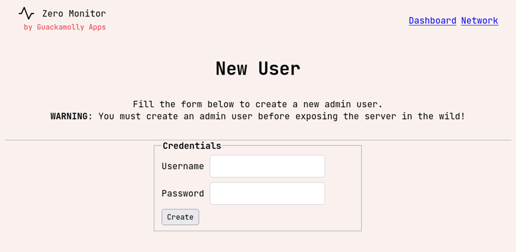

Get Started
The simplest way to get started is by using the one-click deploy scripts provided by the tool.
These will download the most appropriate binary for your OS, from the latest release on GitHub.
# Linux/macOS
bash <(wget -qO- https://raw.githubusercontent.com/guackamolly/zero-monitor/refs/heads/master/.github/get-master)
# Windows
curl -s -o %TEMP%\get-master.bat https://raw.githubusercontent.com/guackamolly/zero-monitor/refs/heads/master/.github/get-master.bat
"%TEMP%\get-master.bat"
# Linux/macOS
bash <(wget -qO- https://raw.githubusercontent.com/guackamolly/zero-monitor/refs/heads/master/.github/get-node)
# Windows
curl -s -o %TEMP%\get-master.bat https://raw.githubusercontent.com/guackamolly/zero-monitor/refs/heads/master/.github/get-node.bat
"%TEMP%\get-master.bat"
(Pro-tip: use these scripts as they keep track of the latest release versions!)
Master Agent
Before deploying monitoring agents in any of your servers, you need to deploy the master agent
that will receive information from the servers and expose it in a dashboard. To do so, you can use the initialization script or download it from GitHub.
@@
@ @
@@@ @ @@@
@ @
@@
One-click lightweight server monitor tool based on ZeroMQ protocol.
https://github.com/guackamolly/zero-monitor
___________________________________________________________________
2024/12/18 10:42:56 (info): ⇨ ZeroMQ server started on tcp://[::]:36113
2024/12/18 10:42:57 (info): ⇨ http server started on http://[::]:8080
By default, Master opens two ports accessible within the private network (0.0.0.0):
- (HTTP) 8080 - this is where the dashboard can be accessed and where you will be able to control the network
- (TCP) 36113 - this is where monitoring agents will connect to send information and receive commands
Later you can customize the default configuration (see env.md) file, but for now open the dashboard page.

Certain areas like the dashboard page are restricted to admin users. Since this is the first time you're using the tool,
you will be required to create an admin user to access the dashboard. Use a strong password and note it down!
After creating the admin account, you can now access the dashboard page. Click on the Share button.
You now have an invite link that you can pass to nodes. With these links, nodes will be able to connect to the network by prompting the master agent about two things:
- the public key file to encrypt the communication when exchanging symmetric keys that will protect sensitive data (see transport-security.md)
- the connection data to use to connect with master agent
These links are ephemeral and will live for only a short time. These are also sensitive, since they allow any node to authenticate with the network, so you must make sure you don't share them with anyone!
Head back to the homepage by clicking the Zero Monitor logo.
Node/Monitoring Agent
Connecting nodes to the network is also really easy. The homepage should now include the invite link that was previously generated, so you can just copy and paste them in the server to monitor shell.
If all goes well, you should have these logs in the monitoring shell.
@@
@ @
@@@ @ @@@
@ @
@@
One-click lightweight server monitor tool based on ZeroMQ protocol.
https://github.com/guackamolly/zero-monitor
___________________________________________________________________
> GET [http://192.168.1.164:8081/network?join=93c5f3d5-7c91-4664-919b-3247e743081f]
> GET [http://192.168.1.164:8081/network/public-key?join=93c5f3d5-7c91-4664-919b-3247e743081f]
> GET [http://192.168.1.164:8081/network/connection-endpoint?join=93c5f3d5-7c91-4664-919b-3247e743081f]
2024/12/26 12:32:34 started zeromq pub socket on addr: tcp://[192.168.1.164]:36113
After opening the network page you notice that the server is now sending information to master!